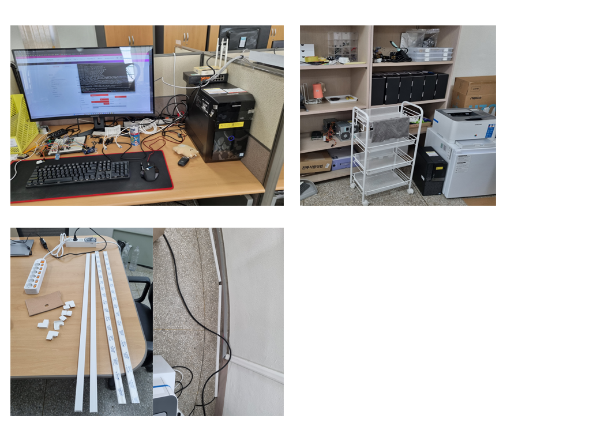
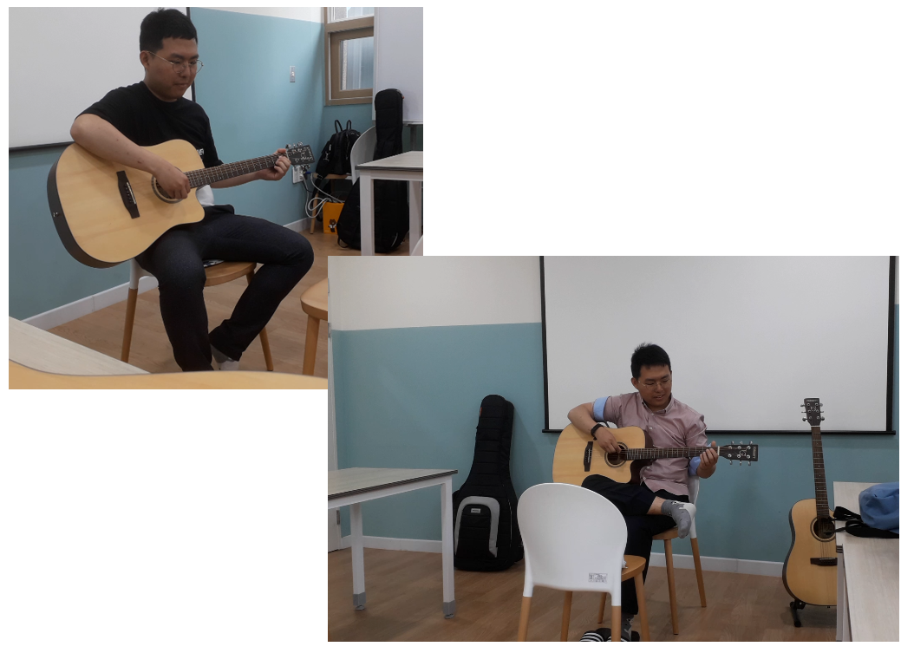

2025. 9 ~
Storytelling.
Hobbies
PhD candidate Do-yoon Jung enjoys listening to music and walking as hobbies. She is a fan of soprano Lee Hae-won's music.
I do web design as a hobby. I do web design because it's fun to express something.
During my master's degree, I had experience setting up a research lab. This unique background is rare for most researchers.

I studied acoustic guitar in the past. Despite his long experience, he can play at a very rudimentary level.
Sometimes I think back to the days when I played the acoustic guitar as a hobby.

I am always dreaming and has a habit of reading a lot to draw his future.
When I think about it, I always try to use my wisdom to prepare for the AGI era beyond the AI era.